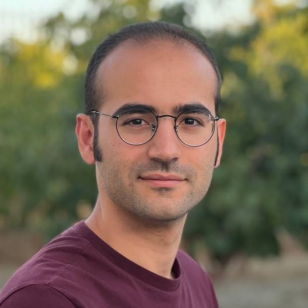

Alireza Modirshanechi
Principal Investigator, LNAI
alireza.modirshanechi@gmail.com
Incoming Tenure-Track Professor (W1) for Artificial Intelligence
Faculty of Mathematics and Computer Science
University of Göttingen
I am an incoming tenure-track professor (W1) and a DFG Emmy Noether awardee in the Faculty of Mathematics and Computer Science at the University of Göttingen, starting this fall, where I will run the Laboratory of Natural and Artificial Intelligence.
My research seeks to uncover computational principles of intelligent decision-making. It spans cognitive science, psychology, neuroscience, machine learning, and information theory, with a focus on formalizing constructs such as curiosity, agency, surprise, and control. I am interested in how these constructs shape natural intelligence, and how they can help us design more adaptive and interpretable AI systems.
Before moving to Göttingen, I was a postdoctoral researcher at Helmholtz Munich and the Max Planck Institute for Biological Cybernetics, where I worked with Eric Schulz and Peter Dayan. I completed my Ph.D. in Computer and Communication Sciences at EPFL in 2024, under the supervision of Wulfram Gerstner, and received my B.Sc. in Electrical Engineering from Sharif University of Technology in 2018.
I have received the DFG Emmy Noether Award, the Dimitris N. Chorafas Foundation Award, and the EPFL EDIC Thesis Distinction Award, among others. You can find my CV here.